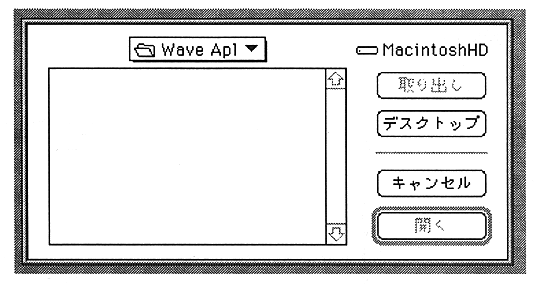

Return to previous page ｜ Return to menu ｜ Go to next page
●Open
- Open an already saved file.
When this item is selected, a window showing saved files (AIFF files only) is displayed. Select the target file from the window. Selecting a file opens an edit window that captures this waveform.

For stereo, the L and R windows are displayed.
Return to previous page ｜ Return to menu ｜ Go to next page